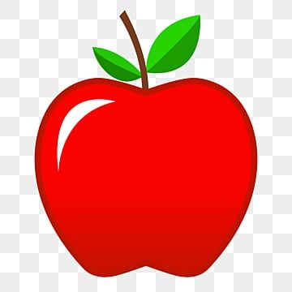

Apel adalah buah bulat dengan kulit berwarna merah atau hijau dan bagian dalam berwarna keputihan.
Click Apple

| Merah | Hijau |
|---|---|
| memiliki kandungan beta karoten lebih tinggi hingga 50% yang berperan sebagai sumber antioksidan | memiliki kandungan vitamin A yang lebih tinggi untuk membantu menjaga kesehatan mata |
Sekarang tahu kan perbedaan kandungan apel?
Apel mengandung senyawa antioksidan seperti flavonoid dan polifenol yang dapat membantu menjaga kesehatan Jantung anak-anak. Senyawa ini dapat membantu mengurangi risiko penyakit jantung pada masa depan.
Apel berasal dari Kazakhstan, di Asia Tengah di sebelah timur Laut Kaspia.
What
x = 5;
y = 6;
z = x + y;
seperti warna ♥